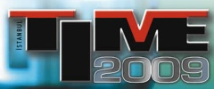
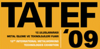

|
19- 22 Kasým 2009 > Plast Eurasia Ýstanbul 2009, 19. Uluslarararasý Ýstanbul Plastik Endüstrisi Fuarý:
(PAGEV Türk Plastik Sanayicileri, Araþtýrma, Geliþtirme ve Eðitim Vakfý iþbirliðiyle hazýrlanmaktadýr)
Yer: Tüyap Fuar ve Kongre Merkezi, Beylikdüzü
Plastikte potansiyel bir pazar olan ülkemiz ve komþu ülke sanayicilerinin plastik ve plastik ambalaj sanayiine dönük yatýrýmlarý için uygun teknoloji, makine ve malzemeyi topluca tanýma, kýyaslama ve seçimlerine olanak tanýyan bu Fuar'da; plastik makineleri, kimyasal ve hammaddeler, makine yan ve ara sanayi, ýsý ve kontrol cihazlarý, kalýp ve hidrolik-pnömatik ekipmanlar sergilenecektir.
Plast Eurasia Ýstanbul Fuarý 2008 yýlýnda 42 ülkeden toplam 1018 firma ve firma temsilciliðinin katýlýmý ile gerçekleþmiþtir. Türkiye’nin ve Avrasya bölgesinin en önemli ve en kapsamlý etkinliði olan Plast Eurasia Ýstanbul fuarý 2008 yýlýnda 60 ülkeden toplam 27.018 ilgili tarafýndan ziyaret edilmiþtir.
Ürün guplarý |
Plastik makineleri
- Plastik enjeksiyon makineleri
- Plastik þiþirme makineleri
- Pet þiþirme makineleri
- Plastik film makineleri
- Poþet kesme makineleri
- Enjeksiyon þiþirme makineleri
- Plastik kýrma makineleri
- Plastik geri dönüþüm makineleri
- Termoform makineleri
- Granül makineleri
- Plastik boru makineleri
- Extruderler
- Flexo baský makineleri
- Kauçuk enjeksiyon makineleri
- PVC mikser makineleri
- Plastik ambalaj teknolojisi makineleri
Kimyasal ve hammaddeler
- Mühendislik plastikleri, Mühendislik polimerleri
- Masterbatchler, Renklendiriciler, Matbaa mürekkepleri
- PVC katký maddeleri, Kauçuk katký maddeleri, Kauçuk kimyasallarý
- Ambalaj ve sanayi polimerleri
- PVC kompaundlar, PVC granül
- PVC ýsý ve ýþýk stabilizatörleri
- Termoplastik elastomerleri
- Elyaf hammaddeleri
- Temel ve ara kimyasallar
- Polipropilen, Polietilen, Polistiren, Polyolefinler,
|
Makine yan ve ara sanayi
- Plastik profil ve boru extrüzyon hatlarý
- Robot sistemleri
- Kablo hatlarý
- Lastik ve hortum hatlarý
- Plastik iþleme için CNC makinesi
- Etiketleme robotlarý
- Soðutma kuleleri
- Chiller soðutucular
- Fýrça üretim makineleri
- Konveyör bantlar
- Mýknatýs ve metal ayýrýcýlarý
- Hammadde karýþtýrýcýlarý
- Kalýp þartlandýrýcýlarý
- Pres ve sac iþleme makineleri
- Kovan ve vidalar
- Redüktörler
- Havalandýrma borularý
|
Kalýp
- Plastik þiþirme kalýplarý
- PET þiþe kalýplarý
- Kapak kalýplarý
- PVC þiþe kalýplarý
- Pet preform kalýplarý
- Plastik ektrüzyon kalýplarý
- PVC kapý-pencere ve yardýmcý profil ekstrüzyon kalýplarý
- Enjeksiyon kalýplarý
Isý ve kontrol cihazlarý
- Rezistanslar
- Bimetaller
- Sensörler
- Göstergeler
- Polimer - plastik test cihazlarý
- Hassas teraziler
- Elektronik teraziler
- Sýcak yolluk sistemleri
- Statik ekipmanlar
- Sýcaklýk ölçüm elemanlarý
- Isý kontrol modüler sistemler
- Endüstriyel ýsýtma elemanlarý
Hidrolik ve pnömatik
- Hidrolik silindirler
- Pompalar
- Fitting ve aksesuarlarý
- Hava kompresörleri
- Basýnçlý hava hattý ekipmanlarý
- Baðlantý ekipmanlarý
- Hava tanklarý
|
Daha
fazla bilgi için: www.plasteurasia.com
05 - 08 Kasým 2009 > KALIP 2009, 5. Ýstanbul Kalýp
Fuarý:
Yer: Ýstanbul Fuar Merkezi
Ziyaret saatleri: 11:00 - 19:00
Ýleri teknoloji makine parkuru, bilgi birikimi, uygun fiyat politikasý ve coðrafik avantajlarý ile sýnýr tanýmaz bir hal alan kalýp sektörümüz, 5. senesinde, spesifik fuarýnda buluþuyor.
Ýstanbul Kalýp Fuarý, önceki senelerde olduðu gibi, sektörün yükselen baþarý grafiðini kamuoyuna duyurmayý, uluslararasý arenalarda söz sahibi olmasý konusunda destek saðlamayý ve sektörün ihtiyaç duyduðu platformu oluþturmayý hedefliyor.
Üreticiler, tüketiciler, satýn almacýlar, uygulamacýlar, yurtiçi ve yurt dýþý temsilcileri. Kýsacasý sektörün tüm mensuplarý, 5. Ýstanbul Kalýp Fuarý'nda yeniden bir araya geliyor. Sektörün güç birliði yaptýðý, kalýp üreticisi ile sanayicilerin buluþtuðu gerçek ticari platform yeniden oluþuyor...
Katýlýmcý ürün gruplarý |
Kesme kalýplarý
Friksiyon kalýplarý
Pres kalýplarý
Plastik enjeksiyon kalýplarý
Metal enjeksiyon kalýplarýý
Termoform kalýplarý
Sývama kalýplarý
Þiþirme kalýplarý
Plastik kalýplarý
Þiþirme kalýplarý
Model kalýplarý
Kauçuk enjeksiyon kalýplarý
EPS kalýplarý
|
Sac metal kalýplarý
Döküm kalýplarý
Dövme kalýplarý
Cam kalýplarý
CAD/CAM/CAE PDM, PLM yazýlýmlarý
Üç boyutlu ölçüm ve kalýp tasarýmý
Endüstriyel ürün tasarýmý
Kalýp setleri
Kalýp çeliði
Isýl iþlem
Kalýp parlatýcýlarý
Kesici ve deliciler |
Kalýp üretim makineleri
Kalýp tezgahlarý
Kimyasallar
Hammaddeler
Teknik hýrdavat
Rezistanslar
Baðlantý elemanlarý
Takým tutucular
Sistemler
Elemanlar
Ek parçalar |
Ýlgili haber: 12-11-2008 > 4. Ýstanbul Kalýp Fuarý, sektörel panel ve seminerlerle birlikte 06-09 Kasým tarihlerinde gerçekleþtirildi:
Daha
fazla bilgi için: www.KalipFuari.com
Not: TurkCADCAM.net, CADCAMkariyer.net ve e-imalat.com, 5. Ýstanbul Kalýp Fuarý'ný destekleyen yayýnlar arasýnda yer almaktadýr.
05 - 08 Kasým 2009 > Bursa Metal Ýþleme Teknolojileri Fuarý
8. Metal Ýþleme Makineleri, Kaynak, Kesme, Delme Teknolojileri, El Aletleri, Pnömatik ve Hidrolik Fuarý
Yer: Tüyap Bursa Uluslar arasý Fuar ve Kongre Merkezi
Ziyaret saatleri: 11:00 - 20:00
Bu Fuar, TÝAD Takým Tezgâhlarý Sanayici ve Ýþ Adamlarý Derneði iþbirliði, Bursa Büyükþehir Belediyesi ve Bursa Ticaret ve Sanayi Odasý desteði ile hazýrlanmýþtýr. ELECO 2009 Elektrik, Elektronik, Aydýnlatma, Otomasyon ve Ýletiþim Fuarý ile eþ zamanlý olarak 30.000 m2 kapalý alanda düzenlenecek olan bu Fuar, 2, 3, 4 ve 5 numaralý salonlarda, ELECO 2009 ise 1 numaralý salonda ziyaretçilerle buluþacaktýr.
Sektörün en önemli üretici, ihracatçý ve ithalatçý firmalarýnýn katýlýmýyla hazýrlanan, her türlü imalat sanayine hitap eden ve üretimin her safhasýnda kullanýlan metal iþleme teknolojilerinde ulaþýlan son noktayý gözler önüne seren bu Fuar, geçtiðimiz yýl 18 ülkeden 276 firma ve firma temsilciliðinin katýlýmýyla hazýrlanmýþ ve yurtiçinden endüstrinin yoðun olduðu 30'un üzerinde ilden ve yurtdýþýndan toplam 26 binden fazla kiþi tarafýndan ziyaret etmiþtir.
Fuar kapsamý:
- Talaþlý imalat makineleri ( NC, CNC, Takým Tezgâhlarý ),
- Presler,
- Kesici ve Tutucu Takýmlar,
- Endüstriyel Fýrýnlar,
- Teknik Hýrdavat ve El Aletleri,
- Aþýndýrýcýlar ve Zýmparalar,
- Endüstriyel Güvenlik Sistemleri,
- Redüktörler,
- Malzeme Kaldýrma ve Taþýma Ekipmanlarý,
- Elektroerezyon Tezgâhlarý,
- Toz ve Elektrostatik Boya makineleri,
- Elektrik Motorlarý,
|
- Endüstriyel Hava Temizleme Sistemleri,
- Hidrolik Pnömatik Sistemleri,
- Kalýplar ve Ýþleme Sistemleri,
- Kaynak Makineleri ve Yedek Parçalarý,
- Kesme Ekipmanlarý ve Yedek Parçalarý,
- Kesme Yaðlarý ve Sývýlarý,
- Endüstriyel Otomasyon Sistemleri,
- Kompresörler,
- Kimyasallarý,
- CAD/CAM Sistemleri ve Yazýlýmlarý,
- Diðer Makine Alet ve Donanýmlarý ve ilgili yayýnlar
|
Daha
fazla bilgi için: www.bursametalisleme.com
05 - 08 Kasým 2009 > Kalite'09
4. Kalite, Kontrol, Metroloji, Test Ekipmanlarý ve Endüstriyel Yazýlým Fuarý
Yer: Ýstanbul Fuar Merkezi / Yeni Fuar Kompleksi - Yeþilköy 11. Salon
AB ile uyum süreci içinde ve sonrasýnda üretimin söz konusu olduðu bütün sektörlerin uymasý gereken yeni normlarýn ve standartlarýn yerleþmesi aþamasýnda ihtiyaç duyacaklarý tüm ürün ve hizmetleri Kalite ’09 de sergilenecek. Ölçme ekipmanlarýndan, ölçü kalibrasyon sistemlerine ve koordinat ölçme makinelerine, kalite güvencesi veren firmalardan, laboratuar test ekipmanlarýna kadar her türden ürün bu fuarda sergilenecek.
Fuara katýlan firmalar Türkiye ve dünyada isim yapmýþ 500 ün üzerinde markayý 15.000 profesyonel ziyaretçi ile buluþturacaklar.
TÜBÝTAK-UME, TSE, TÝAD, TÜRKAK ve TÜRKLAB gibi uzman kuruluþlarýn, üretimde daha üst düzeyde kaliteyi arayan firmalarýn aradýklarýna her aþamada cevap verecekleri tek fuar olan Kalite'09; gýdadan otomotive, beyaz eþyadan tekstile, inþaattan ambalaja, elektronikten kimyaya ülkemizin önder firmalarýna daha kaliteli ve güvenilir üretim yapabilmeleri için yol gösterecek.
Fuar kapsamý;
- Kalite Kontrol Ekipmanlarý
- Kalibrasyon Ekipmanlarý ve Kalibrasyon Yapan Firmalar
- Laboratuar Alet ve Ekipmanlarý
- NDT Ekipmanlarý
- Metroloji Ekipman ve Donanýmlarý
- Koordinat Ölçme Makineleri
(CMM)
- Malzeme Test ve Analiz Ekipmanlarý
- Markalama Ekipmanlarý
- Kalite Güvence Firmalarý
- CAD/CAM/CAE/PDM/PLM Yazýlýmlarý
- Prototipleme ve Hýzlý Prototipleme
Daha
fazla bilgi için: www.kalitefuari.com
Not: TurkCADCAM.net, Kalite Fuarý'nýn çözüm ortaklarý arasýnda yer almaktadýr.
29 Ekim - 01 Kasým 2009 > TIME 2009, 5. Uluslararasý Üretim Teknolojileri Fuarý:
Yer: CNR EXPO Ýstanbul
Ziyaret saatleri: 29-31 Ekim, 10:00-19:00, 01 Kasým, 10:00-18:00
TATEF Uluslararasý Metal Ýþlem ve Teknolojileri Fuarý ile dönüþümlü olarak her iki yýlda bir düzenlenen TIME - Uluslararasý Üretim Teknolojileri Fuarý, Türkiye'nin makine ve teknoloji üretiminde ulaþtýðý düzeyin dünyaya sergilendiði, hedef kitleye teknolojinin uygulamalý tanýtýmlarýnýn gerçekleþtirildiði dev bir organizasyondur.
Makine üreticilerini, satýn almacýlarý ve profesyonelleri buluþturan bir endüstri merkezi olarak tanýmlanan TIME, uluslararasý ölçekte büyük bir sinerji yaratmaya hazýrlanýyor. Makine Ýmalatçýlarý Birliði (MÝB) desteðinde düzenlenen fuara bu yýl Tayvan, Hong Kong, Çek Cumhuriyeti, Ýngiltere, Ýtalya ve Çin’den katýlýmcý firmalar ile Ortadoðu, Balkanlar, AB ülkeleri ve Rusya’dan alýcý gruplarý geliyor. Fuarýn beklenen yabancý ziyaretçi sayýsý 3.000.
Fuardaki
bazý ürün gruplarý:
- CAD/CAM
Sistemleri, Yazýlýmlar
- Tasarým
Mühendisliði, CNC
Takým Tezgahlarý, Takýmlama
- Otomasyon,
Hidrolik-Pnömatik Sistemler
- Metal
Kalýp Döküm Ürün ve Teknolojileri, Soðuk
Þekillendirme ve Döküm Kalýplarý
- Yüzey
Ýþlem, Boyama Mak. Ekipmanlarý, Kaynak
Makine ve Ekipmanlarý
Daha
fazla bilgi için: www.itf-time.com
Not: TurkCADCAM.net ve e-imalat.com, TIME 2009 Fuarý'ný destekleyen yayýnlar arasýnda yer almaktadýr.
14 - 17 Mayýs 2009 > Konmak 2009 - Konya 6. Metal Ýþleme Makineleri, Kaynak, Kesme, Delme Teknolojileri, Malzemeler, El Aletleri, Hidrolik ve Pnömatik Fuarý:
Yer: KTO - TÜYAP Konya Uluslararasý Fuar Merkezi, Konya
Konmak 2009 Fuarý, TÝAD Takým Tezgahlarý Ýþadamlarý Dayanýþma Derneði iþbirliði, Konya Ticaret Odasý, Konya Sanayi Odasý, TÝKA Türk Ýþbirliði Kalkýnma Ýdaresi Baþkanlýðý, Makine Mühendisleri Odasý Konya Þubesi ve KOSGEB desteði ile düzenlenecektir.
Fuarý kapsamý; Metal, ahþap, plastik teknolojileri için imalat makineleri -Takým, torna tezgahlarý - metal enjeksiyon, kalýp, parça, boru iþleme makineleri-Presler - Lazer kesme tezgahlarý - makine elemanlarý: Baðlantý, sýzdýrmazlýk elemanlarý - Diþli, kayýþ, zincirler - Fabrika Donanýmlarý - Taþýma ve Konveyor Bant Sistemleri - Depolama Ýstifleme Sistem ve Ekipmanlarý - Otomasyon Sistemleri ve Yazýlýmlarý - CAD/CAM - Kalite Kontrol, Ölçme Cihazlarý - Güvenlik Sistemleri - Elektrik, Üretim, Çevrim ve Ýletimi - Elektrik Daðýtým, Kumanda, Koruma - Aydýnlatma - Elektrik Elektronik Test Cihazlarý - Hidrolik - Pnömatik Sistemler - Kompresörler - Kaynak, Kesme Teknolojileri ve Makineleri - Delici, Tutucu, Kesici Takýmlarý - Atölye Ekipmanlarý - Teknik Hýrdavat ve El Aletleri - Yan Sanayi Ekipman ve Malzemeleri...
Daha fazla bilgi için:
www.tuyap.com.tr/webpages/konmakfuari
07 - 10 Mayýs 2009 > KALIP AVRASYA 2009 - Bursa 3. Kalýp Teknolojileri ve Yan Sanayiler Fuarý:
 Yer: TÜYAP Bursa Uluslararasý Fuar ve Kongre Merkezi, Bursa Yer: TÜYAP Bursa Uluslararasý Fuar ve Kongre Merkezi, Bursa
Ziyaret Saatleri:
07 - 09 Mayýs > 11:00 - 20:00
10 Mayýs > 11:00 - 19:00
KALIP AVRASYA 2009, Bursa 3. Kalýp Teknolojileri ve Yan Sanayiler Fuarý, Bursa Sac Ýþleme Teknolojileri 2009, Sac, Boru, Profil Ýþleme Teknolojileri ve Yan Sanayileri Fuarý ile eþ zamanlý olarak düzenlenecektir.
Türkiye'nin baþta otomotiv ana ve yan sanayi, makine, beyaz eþya ana ve yan sanayi olmak üzere birçok sektöründe lokomotif bir sanayi þehri olan ve yüksek ihracat kapasitesine sahip Bursa'da hazýrlanan Kalýp Avrasya 2009, ülkemizin ve bölgesinin en kapsamlý ve en önemli buluþmasý olmayý hedeflemektedir.
2007 yýlýnda ikincisi düzenlenen fuar, kalýp sektörünün önde olduðu Portekiz, Ýtalya, Almanya, Avusturya, Ýran, Tayvan ve Kore gibi ülkelerden katýlýmcý firmalarýn da yer aldýðý toplam 23 ülkeden 478 firma ve firma temsilcisinin katýlýmýyla hazýrlanmýþtýr ve yurtiçi ve yurtdýþýndan toplam 19.561 kiþi tarafýndan ziyaret edilmiþtir. Fuar'ý, her yýl olduðu gibi "Kore Uluslararasý Kalýp Üreticileri Birliði" üyeleri de ziyaret edecektir...
Katýlýmcý ürün gruplarý
|
1 - Kalýp imalat çözümleri
Kesme Kalýplarý
Friksiyon Kalýplarý
Pres Kalýplarý
Ekstrüzyon Kalýplarý
Metal Enjeksiyon Kalýplarý
Termoform Kalýplarý
Sývama Kalýplarý
Plastik Enjeksiyon Kalýplarý
Þiþirme Kalýplarý
Model Kalýplarý
Kauçuk Enjeksiyon Kalýplarý
EPS Kalýplarý
Sac Metal Kalýplarý
Cam Kalýplarý
Döküm Kalýplarý
Dövme Kalýplarý
Vakum Kalýplarý
Model Ýmalatý
2 - Kalýp iþleme ve imalat makineleri ve ekipmanlarý
Dik Ýþleme Merkezleri
Yatay Ýþleme Merkezleri
Köprü Tipi Ýþleme Merkezleri
Frezeler
Matkaplar
Desenleme ve Gravürleme Makineleri
Bohrwerkler
Taþlama makinelarý
Erezyonla Ýþleme ve Delme makinelarý
Hidrolik - Ekzantrik Presler
Þerit Testere Tezgahlarý
Plastik Enjeksiyon makinelarý
Plazma - Su Jeti ve Arkla Kesme Makineleri
CNC Kontrol Üniteleri
Kalýp Deðiþtiriciler
3 - Kalýp bakým ve tamir servisleri
Kalýp Kaynaðý
Kalýp Parlatýmý ve Ürünleri
Kalýp Isýl Ýþlemleri
Kalýp Yüzey Ýþlemleri |
4 - Kalýp elemanlarý ve hýrdavat malzemeleri
Ýtici ve Kolon Pimler
Somun ve Civatalar
Kalýp Yaylarý
Burçlar
Kalýp Setleri
Kesici ve Tutucu Takýmlar
Kalýp Parlatma Malzemeleri
Kalýp Baðlama Aparatlarý
Kesici ve Delici Zýmbalar
Ölçü Aletleri
Sýcak Yolluk Sistemleri
Rezistanslar
Kalýp Soðutma Ekipmanlarý
5 - Yarý mamüller ve hammaddeler
Plastik Hammeddeler
Kimyasallar
Kalýp Ýmalat ve Koruma Kimyasallarý
Kalýp Çelikleri
Kalýplýk Alüminyum
Silicon
Epoksi
Reçineler
Toz Metalurjik - Sinterleme Ürünleri
6 - Bilgisayar destekli tasarým ve imalat, mühendislik uygulamalarý
PDM
PLM
CAD
CAM
CAE
Simülasyon
Prototipleme ve Hýzlý Prototipleme ve Ýþleme
3 Boyutlu Ölçüm ve Aktarým
Kalýp Tasarým
Endüstriyel Ürün Tasarým
Döküm ve Döküm Teknolojileri |
Daha fazla bilgi için: www.bursakalip.com
23 - 26 Nisan 2009 > Kayseri Endüstri 2009 ve Eletex 2009 Fuarlarý:
Yer: Kayseri Dünya Ticaret Merkezi Fuar Alaný
Tureks Uluslararasý Fuarcýlýk tarafýndan organize edilen fuar Endüstri 09 ve Eletex 09 olmak üzere iki konuyu kapsýyor.
Sektörün önde gelen firmalarýnýn ürün ve hizmetlerini sergileyecekleri fuar kapsamýnda; seminer, çözüm gösterileri, konferans ve paneller gibi çeþitli etkinlikler de gerçekleþtirilecek.
8. Endüstri & Eletex Fuarýna önceki yýllarda olduðu gibi bu yýl da, Kayseri Sanayi ve Ticaret Odalarý, Organize Sanayi Bölgesi ve birçok kurum ve kuruluþ tarafýndan destekleniyor...
8. ENDÜSTRÝ Fuarý kapsamý: |
|
8. ELETEX Fuarý kapsamý: |
Makine imalatý ve metal iþleme teknolojileri
Birleþtirme, kaynak, kesme ve yüzey iþleme teknolojileri
Plastik, kauçuk, ambalaj teknolojileri
Ticari araçlar, taþýma, depolama, istifleme ve lojistik
Ýþ ve inþaat makine ve ekipmanlarý |
|
Elektrik
Elektronik
Otomasyon
Bilgisayar |
Daha fazla bilgi için: www.kayserifuarlari.com
31 Mart - 05 Nisan 2009 > TATEF 2009 - 12. Uluslararasý Metal Ýþleme ve Teknolojileri Fuarý:
Yer: CNR EXPO Fuar Merkezi, Ýstanbul
Ziyaret Saatleri:
31 Mart - 04 Nisan > 09:00 - 19:00
05 Nisan > 09:00 - 18:00
TATEF 2009, Makine Ýmalatçýlarý Birliði (MÝB) ve Takým Tezgahlarý Ýþadamlarý Dayanýþma Derneði'nin (TÝAD) desteðiyle 8 salonda gerçekleþtirilecek. Fuar'a 750'nin üzerinde firmanýn katýlýmý beklenirken, 70.000'in üzerinde alýncýnýn ziyareti hedeflenmektedir.
Alanýnda Türkiye'nin en büyük, dünyanýn 3. büyük endüstriyel fuarý olan TATEF 2006'ya ise yerli ve yabancý 500'ün üzerinde firma katýlmýþtý. 2.014'ü yabancý toplam 62.672 kiþinin ziyaret ettiði Fuar'da, katýlýmcý firmalarýn Fuar süresince 200 milyon dolarlýk sipariþ aldýklarý tahmin edilmektedir...
Katýlýmcý ürün gruplarý
|
- Takým tezgahlarý
- Sac iþleme makineleri
- Presler
- Yüzey iþleme teknolojileri
- Kesici ve tutucu takýmlar
- Kaynak makineleri ve robotlarý
- Fabrika otomasyonu
- Aþýndýrýcýlar ve zýmparalar
|
- CAD/CAM
- Sanayi tipi fýrýnlar ve donanýmlar
- Ultrasonic endüstriyel yýkama sistemleri
- Basýnçlý hava makineleri
- Elektroerozyon tezgahlarý
- Diðer makine alet ve donanýmlar
|
Daha fazla bilgi için: www.tatef.com |